건설기계설비산업기사 (2019-08-04 기출문제)
1과목: 기계제작법
1. 공작기계로 가공된 평면, 원통면을 정밀하게 다듬질하는 공구는?
- 서피스 게이지
- 스크레이퍼
- 디바이더
- 리머
(정답률: 56%)

2. 드릴링 머신에서 리머(reamer)작업에 대한 설명으로 틀린 것은?
- 드릴링 작업과 동일하게, 빠르게 구멍가공을 할 수 있다.
- 높은 정밀도와 표면 다듬질 상태의 구멍이 필요할 때 사용한다.
- 절삭유를 충분히 공급하여 칩 배출을 원활하게 한다.
- 공작물의 재질과 공작조건에 따라 적당한 리머를 선택한다.
(정답률: 65%)
3. 원형이 대단히 크고 대칭형이거나 같은 모양의 부분이 연속되어서 전체를 구성할 때 원형의 한 부분만을 제작하고 그 원형을 이동시켜 주형 전체를 만들 수 있는 목형은?
- 현형
- 골격형
- 코어형
- 부분형
(정답률: 44%)
4. 절삭가공 시 발생하는 절삭저항 중 소비동력에 가장 영향을 많이 주는 것은?
- 주분력
- 배분력
- 이송분력
- 방향분력
(정답률: 42%)
5. 절삭가공에 있어서 빌트 업 에지(built-up edge)를 줄이는 방법이 아닌 것은?
- 절삭속도를 증가시킨다.
- 절삭 깊이를 줄인다.
- 공구의 윗면 경사각을 크게 한다.
- 마찰계수가 큰 초경합금공구를 사용한다.
(정답률: 45%)
6. 드릴링 머신 작업에서 접시머리 볼트의 머리 부분이 묻히도록 원뿔(추)자리 파기를 하는 작업은?
- 리밍
- 태핑
- 스폿 페이싱
- 카운터 싱킹
(정답률: 49%)
7. 길이 측정기에 해당하지 않는 것은?
- 버니어 캘리퍼스
- 사인 바
- 하이트 게이지
- 게이지 블록
(정답률: 53%)
8. 비교 측정기에 속하는 것은?
- 강철자
- 다이얼 게이지
- 마이크로미터
- 버니어 캘리퍼스
(정답률: 54%)
9. 표준게이지, 마이크로미터 등의 측정면 평면도를 검사하는 데 사용되는 측정기는?
- 프로필로미터
- 스트레이트 에지
- 옵티컬 플랫
- 프로젝터
(정답률: 48%)
10. S의 영향으로 인장강도, 연신율, 충격값 등이 감소되며 특히 열간 가공 시 균일이 잘 생기는 현상은?
- 청열취성(blue shortness)
- 수소취성(hydrogen shortness)
- 적열취성(hot shortness)
- 저온취성(cold shortness)
(정답률: 52%)
11. 인발작업에서 인발력이 결정되기 위한 인자에 해당되지 않는 것은?
- 역장력
- 압하량
- 다이의 각도
- 단면 감소율
(정답률: 32%)
12. 용접의 특징으로 틀린 것은?
- 이음 접합부의 이음 효율이 높다.
- 접합부의 기밀성과 수밀성, 유밀성이 양호하다.
- 제품이 무거워지고 가공을 위한 공수가 많이 든다.
- 열영향으로 잔류응력과 변형이 발생할 수 있다.
(정답률: 52%)
13. 피복 아크 용접봉에 있어서 피복제(flux)의 역할이 아닌 것은?
- 아크를 안정시킨다.
- 용착 금속을 산화시킨다.
- 필요한 합금원소를 보충한다.
- 용융 금속의 유동성을 증가시킨다.
(정답률: 47%)
14. 다음 가공법 중 다이아몬드, 루비, 사파이어 등을 가공하기에 가장 적합한 것은?
- 호닝
- 전해연마
- 슈퍼 피니싱
- 초음파 가공
(정답률: 39%)
15. 연삭숫돌의 눈메움(loading)을 제거하는 작업은?
- 드레싱(dressing)
- 보딩(boarding)
- 크러싱(crushing)
- 셰이핑(shaping)
(정답률: 46%)
16. 압연 롤과 압연재 사이의 마찰계수를 μ, 롤러로부터 압연압력을 P라고 할 때 롤이 자력으로 재료를 끌어당기기 위해 성립하여야 하는 관계는?
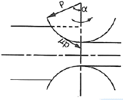
- μ＞tanα
- μ＜tanα
- μ＞Psiunα
- μ＜Pcosα
(정답률: 28%)
17. 목재, 피혁, 직물 등 탄성이 있는 재료로 된 바퀴 표면에 부착시킨 미세한 연삭입자로 다듬는 정밀입자 가공은?
- 래핑(lappung)
- 호닝(honing)
- 폴리싱(polishing)
- 슈퍼 피니싱(superfinishing)
(정답률: 32%)
18. 열처리 방법 중 재질을 경화시킬 목적으로 실시하는 것은?
- 뜨임
- 풀림
- 불림
- 담금질
(정답률: 54%)
19. 밀링머신에서 잇수가 24이고, 비틀림각이 18°인 스파이럴 기어를 가공할 때 등가치수는 약 얼마인가?
- 18
- 24
- 28
- 34
(정답률: 25%)
20. 목형용 목재의 특징으로 틀린 것은?
- 조직이 불균일하다.
- 압력 및 강도가 약하다.
- 금속형에 비해 가공면의 표면거칠기가 매우 우수하다.
- 가공하기가 용이하고, 복잡한 것도 쉽게 제작할 수 있다.
(정답률: 49%)
2과목: 재료역학
21. 그림과 같은 단붙임 원형축에서 d1:d2=3:2라 하면, 직경이 d1인 축에 생기는 응력 σ1과 직경이 d2인 축에 생기는 응력 σ2의 비는?
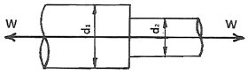
- 2:3
- 3:2
- 9:4
- 4:9
(정답률: 28%)
22. 길이 L인 단순보에 균일분포하중 ω가 작용할 때 최대 굽힘 모멘트는?
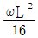
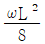
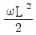
- ωL2
(정답률: 34%)
23. 한 변의 길이가 6cm인 정사각형 단면의 단면계수와 같은 원형단면 축을 만들려면 지름을 약 몇 cm로 해야 하는가?
- 7.2
- 8.2
- 9.2
- 10.2
(정답률: 27%)
24. 그림과 같이 길이 150cm, 단면 2cm×5cm인 사각형 단면의 외팔보가 W=4N/cm의 균일분포하중을 받고 있을 때, 이 보에 발생하는 최대 전단응력은 몇 N/cm2인가?
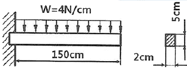
- 80
- 90
- 100
- 110
(정답률: 29%)
25. 평균지름 25cm, 코일의 감김 수 10, 소선의 지름 1.25cm인 원통형 코일 스프링이 180N의 축 하중을 받을 때 스프링 상수는 약 몇 N/m인가? (단, 가로 탄성계수는 88Gpa이다.)
- 1719
- 2638
- 3528
- 4298
(정답률: 20%)
26. 길이 3m, 지름 50cm인 균일단면봉의 자중에 의한 전신장량은 약 몇 cm인가? (단, E=210GPa, 비중량 γ=7.85×104N/m3이다.)
- 1.68×10-5
- 1.68×10-4
- 1.68×10-3
- 1.68×10-2
(정답률: 32%)
27. 인장응력 800MPa과 압축응력 300MPa이 직각으로 작용하고 있는 물체가 있다. 이 물체에 작용하고 있는 최대 전단응력은 몇 MPa인가?
- 550
- 450
- 350
- 300
(정답률: 21%)
28. 직경 10mm, 길이 1m이고 양단이 회전지지된 환봉에 압축하중을 가할 경우, 좌굴하중은 약 몇 N인가? (단, 황봉은 연강이고 세로탄성계수는 200GPa이다.)
- 243
- 969
- 1938
- 3888
(정답률: 20%)
29. σx=-σy=200MPa, τxy=0인 평면응력상태에서 최대전단응력 τmax와 모어원의 윤곽으로 옳은 것은?
- 100MPa,
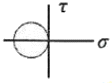
- 100MPa,
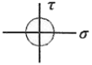
- 200MPa,
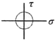
- 200MPa,
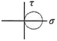
(정답률: 28%)
30. 지름 25mm, 길이 2m의 전동축이 400Nㆍm의 비틀림 모멘트를 받고 있다. 이 축의 비틀림 각도는 약 몇 도인가? (단, 축 재료의 전단탄성계수는 90GPa이다)
- 5.7°
- 7.7°
- 10.3°
- 13.3°
(정답률: 25%)
31. 길이 2.4m이고, 지름 3mm인 강선에 인장하중 850N이 작용할 때 강선의 신장량은 약 몇 cm인가? (단, 세로탄성계수는 210GPa이다.)
- 0.137
- 0.256
- 0.372
- 0.514
(정답률: 30%)
32. 그림과 같이 축하중 P가 작용할 때 α°만큼 경사진 균일 단면에서의 전단 응력을 τ, 수직 응력을 σn이라 하면 다음 표현 중 옳은 것은? (단, 축 방향에 수직한 단면의 단면적은 A이다.)
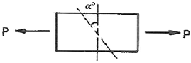
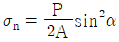
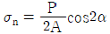
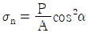
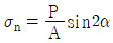
(정답률: 22%)
33. 다음 그림과 같은 삼각형 분포 하중 W1=10kN/m이 작용하고 있는 길이 4m인 단순보에서 반력 RA는 몇 kN인가?
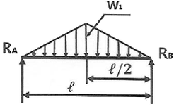
- 5
- 10
- 15
- 20
(정답률: 30%)
34. 그림과 같은 구조물에 수직하중 100N이 작용할 때 강선 BC가 받는 힘은 약 몇 N인가?
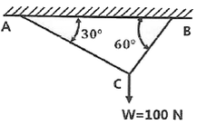
- 86.6
- 110.5
- 125.5
- 136.5
(정답률: 29%)
35. 단순보의 중앙에 집중하중 P가 작용할 때 최대 처짐은? (단, EI:굽힘강성계수, L:보의 길이이다.)
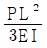
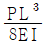
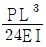
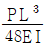
(정답률: 24%)
36. 지름이 10cm이고, 길이가 1m인 연강봉이 인장하중을 받고 0.5mm늘어났다. 이 봉에 축적된 탄성 에너지는 약 몇 Nㆍm인가? (단, 세로탄성계수는 210GPa이다.)
- 56.3
- 102.4
- 206.2
- 312.7
(정답률: 18%)
37. 원형 단면의 외팔보가 500Nㆍm의 최대굽힘 모멘트를 받고 있을 때, 이 보의 지름은 약 몇 mm인가? (단, 외팔보의 허용 굽힘응력 σa=124MPa이다.)
- 16.4
- 27.4
- 34.5
- 43.5
(정답률: 29%)
38. 지름 4.5cm, 길이 115cm의 원형 단면의 축이 있다. 그 양단을 수직 벽에 고정하고 온도를 70℃만큼 높이면 벽에 작용하는 힘은 약 몇 kN인가? (단, 이 봉은 온도가 100℃ 올라갈 때 1.4mm 늘어나고 세로탄성계수는 210GPa이다.)
- 270
- 285
- 290
- 295
(정답률: 20%)
39. 다음 그림은 어떤 단순보의 굽힘 모멘트 선도이다. 어떤 하중 상태에 있는가? (단, Mb는 굽힘 모멘트, x는 보의 길이이다.)
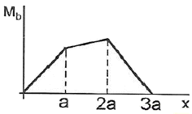
- 중앙에 분포하중이 a의 길이에 걸쳐 작용한다.
- 동일한 2개의 집중하중이 작용한다.
- 크기가 다른 2개의 집중하중이 작용한다.
- 중앙에 1개의 집중하중이 작용한다.
(정답률: 24%)
40. 지름 6cm의 봉에 400kN의 인장하중을 가했더니 지름이 0.0006cm 수축하였다. 이 때 푸아송의 비는 약 얼마인가? (단, 세로탄성계수는 210GPa이다.)
- 0.30
- 0.25
- 0.20
- 0.15
(정답률: 19%)
3과목: 기계설계 및 기계재료
41. 표준상태의 탄소강에서 탄소의 함유량이 증가함에 따라 증가하는 성질로 짝지어진 것은?
- 비열, 전기저항, 항복점
- 비중, 열팽창계수, 열전도도
- 내식성, 열팽창계수, 비열
- 전기저항, 연신율, 열전도도
(정답률: 21%)
42. 다음 중 뜨림의 목적과 가장 거리가 먼 것은?
- 인성 부여
- 내마모성의 향상
- 탄화물의 고용강화
- 담금질할 때 생긴 내부응력 감소
(정답률: 37%)
43. 다음 금속재료 중 인장강도가 가장 낮은 것은?
- 백심가단주철
- 구상흑연주철
- 회주철
- 주강
(정답률: 23%)
44. 티타늄 합금의 일반적인 성질에 대한 설명으로 틀린 것은?
- 열팽창계수가 작다.
- 전기저항이 높다.
- 비강도가 낮다.
- 내식성이 우수하다.
(정답률: 29%)
45. 초경합금에 관한 사항으로 틀린 것은?
- WC분말에 Co분말을 890℃에서 가열 소결시킨 것이다.
- 내마모성이 아주 크다.
- 인성, 내충격성 등을 요구하는 곳에는 부적합하다.
- 전단, 인발, 압출 등의 금형에 사용된다.
(정답률: 14%)
46. 다음 중 온도변화에 따른 탄성계수의 변화가 미세하여 고급시계, 정밀저울의 스프링에 사용되는 것은?
- 인코넬
- 엘린바
- 니크롬
- 실리콘브론즈
(정답률: 42%)
47. 담금질한 강재의 잔류 오스테나이트를 제거하며, 치수변화 등을 방지하는 목적으로 0℃ 이하에서 열처리하는 방법은?
- 저온뜨임
- 심랭처리
- 마템퍼링
- 용체화처리
(정답률: 33%)
48. Fe-Mn, Fe-Si으로 탈산시켜 상부에 작은 수축관과 수소의 기포만이 존재하며 탄소 함유량이 0.15~0.3% 정도인 강은?
- 킬드강
- 캡드강
- 림드강
- 세미킬드강
(정답률: 23%)
49. 다음 조직 중 2상 혼합물은?
- 펄라이트
- 시멘타이트
- 페라이트
- 오스테나이트
(정답률: 32%)
50. 다음 중 피로 수명이 높으며 금속 스프링과 같은 탄성을 가지는 수지는?
- PE
- PC
- PS
- POM
(정답률: 16%)
51. 폴(pawl)과 결합하여 사용하며, 한쪽 방향으로는 간헐적인 회전운동을 주고 반대쪽으로는 회전을 방지하는 역할을 하는 장치는?
- 플라이 휠(fly wheel)
- 래칫 휠(rachet wheel)
- 블록 브레이크(block brake)
- 드럼 브레이크(drum brake)
(정답률: 35%)
52. 하중이 W(N)일 때 변위량을 δ(mm)라 하면 스프링 상수 k(N/mm)는?
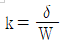
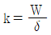
- k=δ×W
- k=W-δ
(정답률: 41%)
53. 재료의 기준강도(인장강도)가 400N/mm2이고, 허용응력이 100N/mm2일 때, 안전율은?
- 0.2
- 1.0
- 4.0
- 16.0
(정답률: 35%)
54. 다음 중 용접법을 분류할 경우 용접부의 형상에 따라 구분한 것은?
- 가스 용접
- 필릿 용접
- 아크 용접
- 플라스마 용접
(정답률: 35%)
55. V벨트의 회전 속도가 30m/s, 벨트의 단위 길이당 질량이 0.15kg/m, 긴장측의 장력이 196N일 경우, 벨트의 회전력(유효장력)은 약 몇 N인가? (단, 벨트의 장력비는 eμθ=4이다.)
- 20.21
- 34.84
- 45.75
- 56.55
(정답률: 22%)
56. 핀 전체가 두 갈래로 되어있어 너트의 풀림 방지나 핀이 빠져 나오지 않게 하는데 사용되는 핀은?
- 너클 핀
- 분할 핀
- 평행 핀
- 테이퍼 핀
(정답률: 43%)
57. 스퍼 기어에서 이의 크기를 나타내는 방법이 아닌 것은?
- 모듈로서 나타낸다.
- 전위량으로 나타낸다.
- 지름 피치로 나타낸다.
- 원주 피치로 나타낸다.
(정답률: 32%)
58. 150rpm으로 5kW의 동력을 전달하는 중실축의 지름은 약 몇 mm 이상이어야 하는가? (단, 축 재료의 허용전단응력은 19.6MPa이다.)
- 36
- 40
- 44
- 48
(정답률: 25%)
59. 다음 ()안에 들어갈 내용으로 옳은 것은?
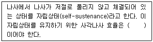
- 50% 이상
- 50% 미만
- 25% 이상
- 25% 미만
(정답률: 32%)
60. 회전수 600rpm, 베어링하중 18kN의 하중을 받는 레이디얼 저널 베어링의 지름은 약 몇 mm인가? (단, 이 때 작용하는 베어링압력은 1N/mm2, 저널의 폭(ℓ)과 지름(d)의 비 ℓ/d=2.0으로 한다.)
- 80
- 85
- 90
- 95
(정답률: 16%)
4과목: 유압기기 및 건설기계일반
61. 펌프의 송출 압력과 송출량을 일정히 하고 정변위 유압 모터의 변위량을 변화시켜 유압모터의 속도를 변화시키면서 정마력 구동이 얻어지는 회로는?
- 카운터 밸런스 회로
- 직렬 배치 회로
- 파일럿 조작 회로
- 정출력 구동 회로
(정답률: 36%)
62. 유압 장치를 사용하여 힘을 증대하는 기계는?
- 진동 개폐 밸브
- 토크 컨버터
- 쇼크 업소버
- 유압 잭
(정답률: 40%)
63. 어떤 작동유의 압축률이; 6.8×10-5 일 때, 압력을 0에서 100MPa까지 압축하면 체적은 몇 % 감소하는가?
- 0.48%
- 0.58%
- 0.68%
- 0.78%
(정답률: 30%)
64. 다음 중 기어펌프에서 맥동 원인이 되는 폐입 현상을 방지하기 위해 사용하는 방법으로 가장 적절한 것은?
- 피스톤 로드 강도를 크게 한다.
- 기어펌프의 토출압을 낮춘다.
- 백래쉬를 적게 한다.
- 릴리프 홈을 만든다.
(정답률: 21%)
65. 다음 중 유압 속도제어 회로에 해당되지 않는 것은?
- 미터 인 회로
- 블리드 아웃 회로
- 미터 아웃 회로
- 블리드 오프 회로
(정답률: 31%)
66. 외부 파일럿 압력이 정해진 압력에 도달하면, 입구 쪽에서 탱크 쪽으로 자유 흐름을 허락하는 압력 제어 밸브는?
- 스로틀 밸브
- 리듀싱 밸브
- 언로드 밸브
- 디셀러레이션 밸브
(정답률: 41%)
67. 다음 중 어큐물레이터의 주요 사용목적으로 옳지 않은 것은?
- 압력 감소용
- 에너지 축적용
- 충격 압력의 완충용
- 펌프 토출압의 맥동 감쇄
(정답률: 16%)
68. 다음 기호로 표시되는 것은?
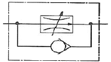
- 가변 교축 밸브
- 바이패스형 유량 조절 밸브
- 유량 조정 밸브(체크밸브붙이)
- 직렬형 유량 조정 밸브(온도보상붙이)
(정답률: 35%)
69. 유압 베인 모터의 1회전당 유량이 20cc이고 기름의 공급압력이 60N/cm2 때, 유량이 20ℓ/min이면 발생할 수 있는 최대 토크는 약 몇 Nㆍm인가?
- 1.91
- 2.49
- 3.59
- 4.48
(정답률: 11%)
70. 다음 중 압력제어 밸브에 해당하지 않는 것은?
- 감압 밸브
- 체크 밸브
- 시퀀스 밸브
- 릴리프 밸브
(정답률: 34%)
71. 스크레이퍼(scraper)의 용도가 아닌 것은?
- 토양을 굴삭한다.
- 토양을 운반한다.
- 토양을 다진다.
- 토양을 하역한다.
(정답률: 29%)
72. 무한궤도식 건설기계의 하부구동체(하부추진체)와 직접적인 관계가 없는 것은?
- 트랙롤러
- 전부유동륜
- 리코일스프링
- 조향기어박스
(정답률: 29%)
73. 버킷 평적 용량이 0.5m3인 굴삭기로 10초에 1회의 속도로 작업을 하고 있을 때 1시간 동안 이론 작업량(m3/h)은? (단, 버킷 계수는 1.0, 작업효율은 1.0, 토량변화율은 1.0이다.)
- 90
- 120
- 180
- 240
(정답률: 30%)
74. 디젤기관의 연료분사펌프에서 분사량을 조절하는 부품은?
- 태핏
- 플런저
- 릴리프 밸브
- 딜리버리 밸브
(정답률: 31%)
75. 자연수를 보건위생상 해가 없는 수질로 처리하는 정수법 중 깊은 우물이나 지하수에서 철이나 암모니아 등이 다량 용해되어 있을 때 이를 제거하기 위해 물을 공기(산소)에 잘 접촉시켜 용해물을 산화하여 제거하는 방법은?
- 침전법
- 살균법
- 경수 연화법
- 폭기법
(정답률: 25%)
76. 다음 중 주로 정지 작업을 하며 지균 작업, 제설 작업, 하수구 파기, 제방 작업 등에 가장 효과적인 장비는?
- 굴삭기
- 노상 안정기
- 항타 및 항발기
- 모터 그레이더
(정답률: 26%)
77. 모터 스크레이퍼에서 주행과 관련한 동력 전달 계통을 구성하는 장치가 아닌 것은?
- 엔진
- 에이프런
- 차동기어장치
- 유성 기어형 종감속 기어
(정답률: 38%)
78. 공기압축기의 부품 중 공기량을 조정하여 일정 압력으로 유지시켜 탱크로 보내주는 역할을 하는 것은?
- 애프터 쿨러
- 인터 쿨러
- 언로더 밸브
- 이젝터
(정답률: 28%)
79. 아스팔트 피니셔의 규격표시는?
- 아스팔트 혼합제는 포설할 수 있는 표준 포장 폭(m)
- 아스팔트 혼합제의 생산량(리터)
- 배송능력(m3/sec)
- 탱크 용량(kg)
(정답률: 35%)
80. 준설선에 관한 설명으로 틀린 것은?
- 버킷 준설선은 암반 준설에 적합하다.
- 펌프 준설선을 주로 매립 공사에 이용된다.
- 그래브 준설선은 규모가 작은 공사, 협소한 장소에서의 작업에 유리하다.
- 디퍼 준설선은 굴착력이 강해 경토질이나 암반 준설에 적합하다.
(정답률: 16%)